Click on the buttons inside to see the contents.
| 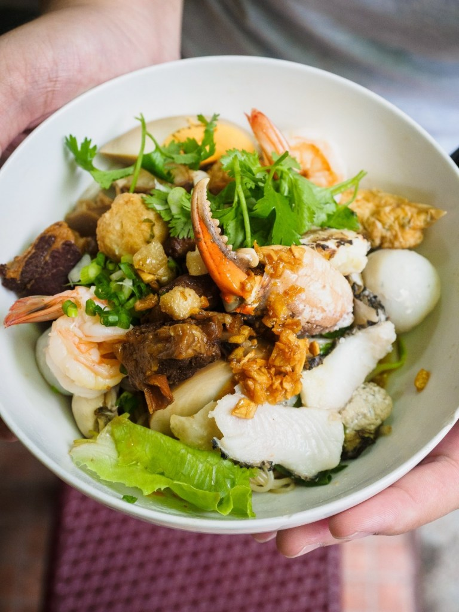 | Operating since 1932, Bakmi Hock Seng had been consistent with their taste and is never stingy with the ingredients. With generous toppings and delicious noodles, it is no wonder they are still one of the locals’ penchant for breakfast!. |
|---|
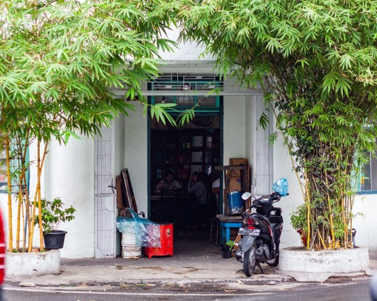
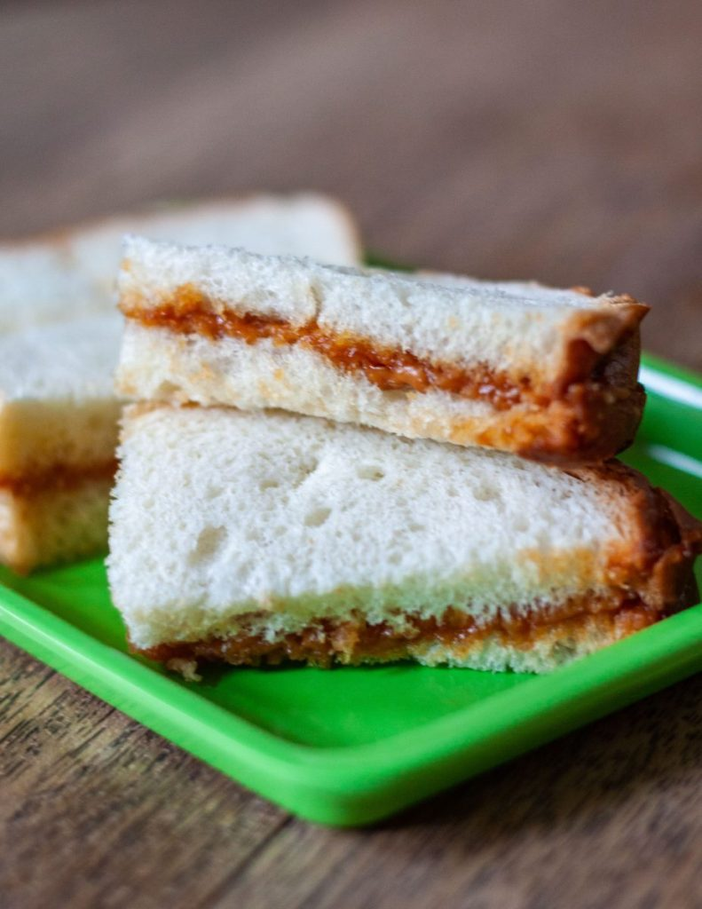
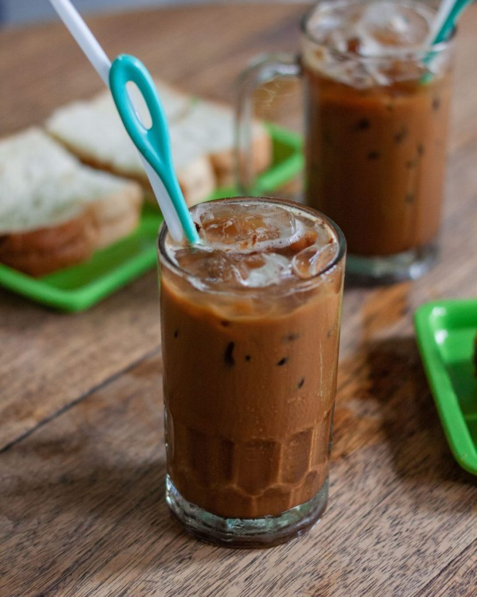
|
Graced with a traditional outlook and an even more old-fashioned furniture, it is truly a place to imagine how Medan had been like back in the olden days. While sitting in a cramped space near the window, enjoy a glass of their Kopi Susu Dingin (Iced Coffee Latte) which is what they are known for while getting a plate of toast for breakfast. (However, the price might be a tad too pricy for a cup of coffee — at least for the locals). |
|---|
| 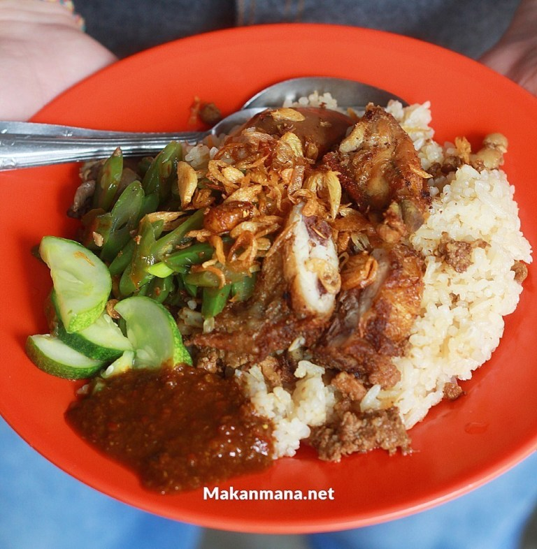 | This rice stall that has been operating for more than 40 years, serves rice with shredded chicken, minced pork, cucumber, boiled egg and fried shallot is a one of my favourite. Rice is a basic staple for the people in Asia, so many rice stalls are spread across the city. The sweet and savoury sambal kecap is the favourite here, as well as the aromatic rice and well-seasoned long beans. Make sure you get a bowl of their Mie Pangsit as well which is infused with bold pork aroma (in the soup). |
|---|
| 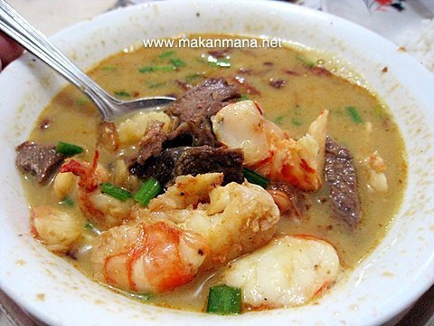 | Located right across the cultural heritage mansion Tjong A Fie in Medan, this place is perfect to start your morning with before going to explore the city. They have three different types of ingredients you choose to accompany your Soto with, ranging from chicken, cow, and shrimp; or just have them all in the bowl! |
|---|
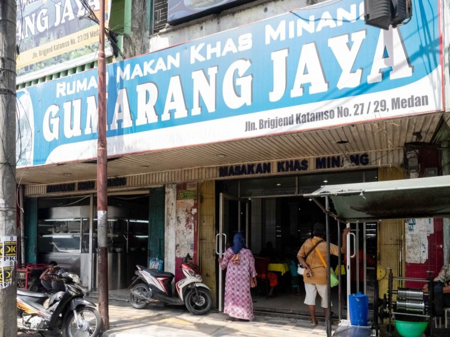
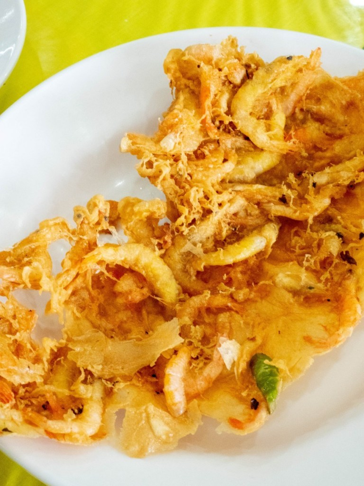
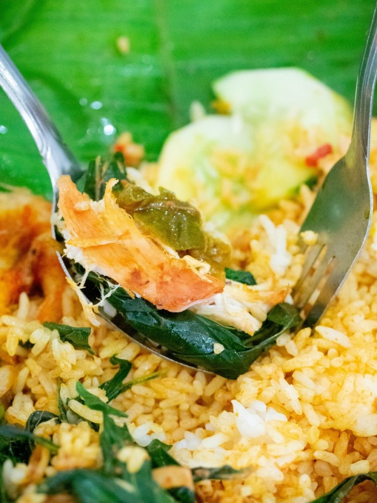
|
Founded in 1966, this restaurant sells Minang Cuisine or also known as Padang Cuisine. Traditionally, you’ll be served a number of cuisines right on the table — you pay what you eat so don’t be surprised if they charge you a lot if you finish everything on the table. However, a more popular dining experience has emerged and all you have to do is get what you want wrapped up in the banana leaf and eat on the spot. The banana leaf fragrant that is used to wrap the rice will definitely add more aroma as well. |
|---|
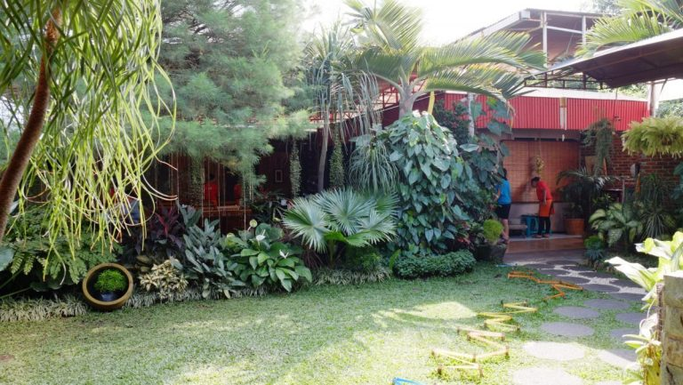
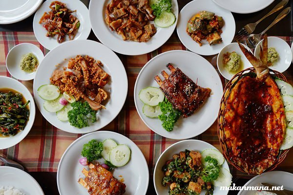
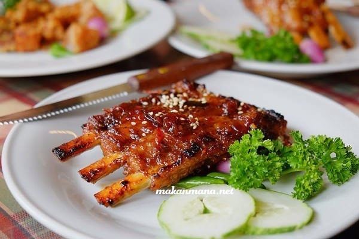
|
With a touch of Korean’s flavour in the kitchen, Ondo brings a twist in Bataknese’s generic grilled pork. On the menu, they serve Batak-style grilled pork along with Korean-style grilled ribs, such as Kalbi Saos Ondo, which we recommend you to try. |
|---|